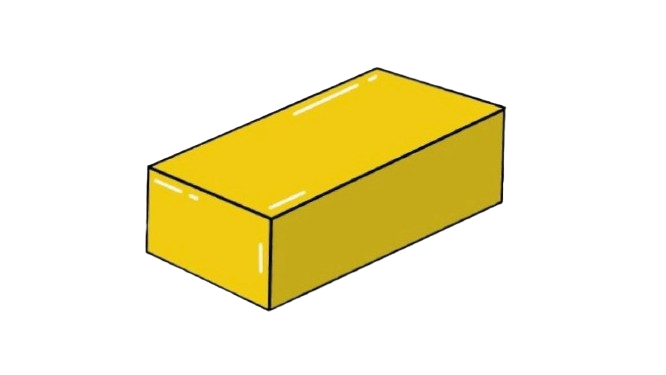

Precious Metals Chart
Select Time Period:
Today
7 Days
30 Days
Drag and drop metals into the drop container:


Gold: Rarity: ★★★★☆
Where It's Found: Mined from underground veins, riverbeds, and alluvial deposits.
Gold is a rare, non-reactive, yellow noble metal known for its pliability, conductivity, and high density, with its chemical symbol being “Au” from the Latin word ”aurum”.
What Is It Used For?
- Jewelry and luxury goods
- Electronics and aerospace (great electrical conductor)
- Investment, banking, and central reserves
Silver: Rarity: ★★★☆☆
Where It's Found: Extracted from ore veins and as a byproduct of copper, gold, lead, and zinc mining.
Silver is a shiny, white precious metal prized for its high conductivity, reflectivity, and antibacterial properties.
What Is It Used For?
- Jewelry and silverware
- Electronics and solar panels
- Photography and medical applications
Platinum: Rarity: ★★★★★
Where It’s Found: Mined primarily from alluvial deposits and ore bodies in South Africa, Russia, and Canada, often alongside nickel and copper.
Platinum is a dense, silvery-white precious metal valued for its exceptional resistance to corrosion, high melting point, and catalytic properties.
What Is It Used For?
- Jewelry and high-end watches
- Catalytic converters in vehicles
- Industrial catalysts and laboratory equipment
- Medical implants and dental materials